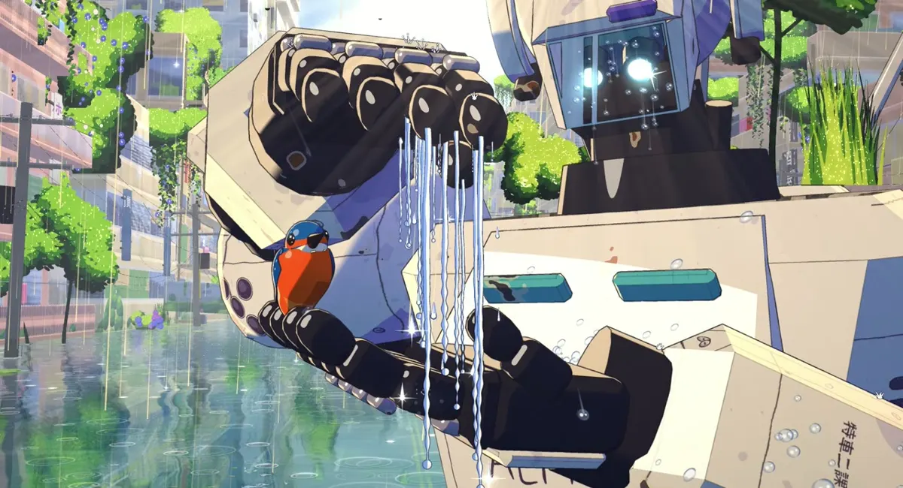
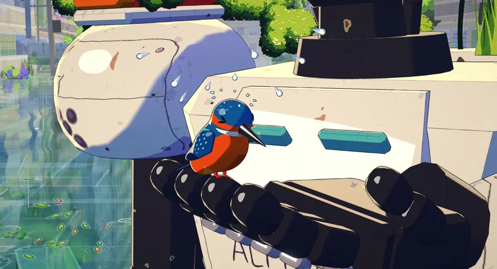
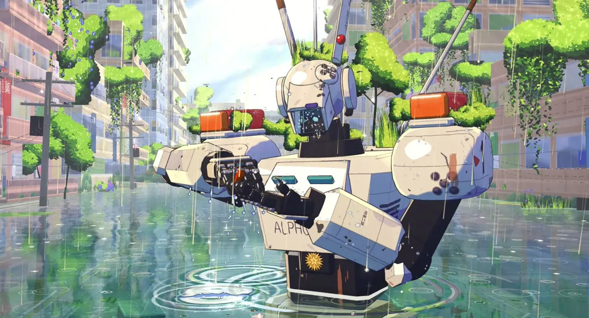
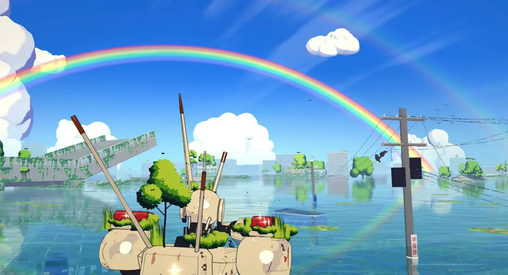

数据通过公开 GitHub API 获取，时间 2026-11-04 21:45（UTC+8）。仓库建于 2026-11-04 00:46（UTC+8），只有 1 个整体提交（01e1eed）；Release v1.0 附 sunshower.html（约 78 MB）与 sunshower.mp4（约 30 MB）。仓库内 dist/sunshower_lite.html 约 26 MB；src/ 下 41 个 JS 模块，本站计数约 1.47 万行。

docs/shelter.jpg，缩小转为 WebP）它是什么
Sunshower 是一部 42 秒、24 fps、1920×1040 的动画短片，片名取日语「狐の嫁入り」（狐狸出嫁，即太阳雨）。主角是《机动警察》（Patlabor）里的 AV-98 英格拉姆「阿尔冯斯」，作者明确标注这是同人致敬，机器人设计版权属 HEADGEAR / Sunrise，与官方无关。README 写明制作工具是 Claude Code。
它的卖点是“像手绘动画，但全是代码”：用 three.js 搭一个 3D 场景，再用一条自定义的多通道渲染管线去模仿赛璐璐角色 + 手绘背景的制作方式；无头 Chrome 逐帧截取、ffmpeg 编码，最终交付物是一个把 MP4 以 base64 嵌进去的单文件播放器。项目在 README 结尾致谢了同类作品 The Moss Keeper。



以上为作者仓库 docs/ 中的成片截图，依 MIT 许可转载代码仓库附带的图像并缩小压缩为 WebP；画面中的机器人造型属 HEADGEAR / Sunrise，不在 MIT 范围内，本站仅作介绍性引用。成片视频未下载、未转载。
它是怎么做出来的
1. 一条模仿动画制作的渲染管线
场景先画出颜色和一张“数据缓冲”（视图法线、深度、材质 ID），后续每个通道按材质 ID 区别对待：背景像素走 8 扇区、深度感知的 Kuwahara 滤镜，变成水粉笔触；角色像素只描线，线条由 ID/深度/法线边缘检测而来，带压力噪声、随距离变细；水面是屏幕空间平面，做涂抹反射、折射到水下街道、焦散、手绘雨圈和闪光带；再叠雾、雨幕、光束，最后泛光、高调动画调色和胶片颗粒。
2. 角色：两阶赛璐璐 + 手写贴花
角色是两阶硬阴影的 3D 模型，阴影偏冷的薰衣草色，有单独的角色主光。机身上的「ALPHÔNSE」「特車2-1」「警視庁」、面板缝和螺栓都是 canvas 手写贴图，沿装甲投影以包住曲面。翠鸟是带骨骼的 3D 模型，眼睛是画出来的形状（眨眼、眯眼、开心的 ∩）。
3. 一拍二，且一切都是时间的纯函数
角色按一拍二（每秒 12 张）动，水面特效按一拍三，模仿电视和剧场动画；手臂用两骨 IK。所有模块都只从时间 t 和节拍表 CUES 推导状态，不跨帧累积、不用 Math.random（用种子随机）——任意帧可以按任意顺序渲染，所以无头渲染可断点续跑、结果确定。
4. 声音全部合成
蝉鸣、雨打水面与金属、警笛短鸣，以及钢琴/弦乐/长笛的小配乐，都用 Web Audio 的 OfflineAudioContext 合成，并锁定在 src/shots.js 的故事节拍上。
5. 多个智能体“部门”并行，靠一份制作圣经协作
仓库里的 CONTRACT.md（标题为 “Sunken Patrol — production contract”）是给并行工作的智能体看的制作合同：美术方向（明亮、高调、像剧场动画而非 3D/CGI）、10 个镜头的分秒表、世界坐标、渲染通道约定，以及按文件划分的六个“部门”——导演、环境、水与光特效、鸟类、声音、交付——edit ONLY your files
。它还要求每次修改后渲出静帧、用 Read 工具亲眼看图。这是本站此前收录的渲染契约思路在多智能体场景下的一个完整样本。
十个镜头
| # | 镜头 | 时间（秒） | 内容 |
|---|---|---|---|
| 1 | summer | 0–5 | 低机位大全景：蓝天积云、被淹没的绿色城市、机器人居中 |
| 2 | friends | 5–10 | 中近景：左手掌心向上托着翠鸟，小鸟理毛、跳动 |
| 3 | drops | 10–13 | 贴水面：薄云遮日，第一批大雨滴打出涟漪 |
| 4 | plip | 13–15.5 | 大特写：雨滴打中小鸟的头，它眨眼抬头 |
| 5 | shower | 15.5–20 | 逆光太阳雨全景，机器人仰头看雨 |
| 6 | umbrella | 20–25 | 右手出水，盖到小鸟上方成“屋顶” |
| 7 | shelter | 25–30.5 | 手掌下：雨帘从指尖流下，小鸟抖水、蓬毛，机器人眨眼 |
| 8 | rainbow | 30.5–35 | 从背后仰拍：雨停、太阳出来、彩虹升起 |
| 9 | tip | 35–39 | 肩头近景：手移开，小鸟跳到指尖，肩灯闪红两次 |
| 10 | goodbye | 39–42 | 翠鸟飞向彩虹，机器人轻轻挥手，淡出到暖白 |
据 CONTRACT.md 的镜头表整理。
快速上手
# 只想看：下载 dist/sunshower_lite.html（约 26 MB），用浏览器打开即可，离线可用
git clone https://github.com/0xCodez/sunshower
cd sunshower
npm install # 需 Node 18+、Google Chrome、ffmpeg
npx serve . # 打开 index.html?scale=1 进入工作台，拖动时间轴
npm run build # 配乐 → 分段渲染（可续跑）→ dist/ 单文件播放器启发
- “像不像动画”拆成了可实现的规则：一拍二、按材质 ID 分开描线与笔触、冷色阴影、手写贴花——每一条都能落到一个着色器或一个时间量化函数上。
- 确定性是工程前提：状态只由时间推出，才能随机访问任意帧、断点续跑、让多个智能体各改各的模块而互不干扰。
- 合同比提示词长：真正驱动多智能体协作的是一份写清坐标、时间、文件归属和自检方式的制作圣经，而不是一句提示词。
⚠️ 核实与说明
- ⚠️ “没有视频模型、图像模型或手绘帧”是作者自述；本站读了源码结构（场景、通道、贴图均为代码生成），未逐文件排查是否混入外部图像素材。
- ⚠️ 制作耗时、智能体数量、使用的具体模型与成本，仓库均未说明。
CONTRACT.md提到并行“部门（智能体）”，但没有过程记录。 - ⚠️ 本站未在本地完整运行
npm run build，也未逐帧比对成片。 - 许可：
LICENSE为 MIT（Copyright (c) 2026 Beyond Dev），附加说明称机器人设计与标记不在许可内、vendor/中的 three.js 为 MIT；因附加文字，GitHub API 将其识别为 “Other”（2026-11-04 实时核对）。 - 作者 GitHub 资料显示名称 Beyond Dev，关联 X 账号 @0xMovez；与本站此前收录的 X 作者 @0xCodila 名字相近，但没有证据表明是同一人。
附录：README 全文中文翻译
Sunshower · 狐の嫁入り
一部 42 秒的动画短片，每一帧都由代码渲染：没有视频模型，没有图像模型，没有手绘帧。一台警用劳动机器人齐腰站在被淹没、长满植物的东京，手上停着一只翠鸟。太阳雨落下，机器人抬起另一只手，像伞一样罩在小鸟上方。雨停了，一道彩虹在被淹没的城市上空展开。
［图：shelter；summer、friends、plip、shower、umbrella、rainbow 六张截图］
观看：下载
dist/sunshower_lite.html（或从 Releases 下载全画质的sunshower.html/ MP4），用任意浏览器打开。它是一个自包含文件，可离线使用。《机动警察》同人致敬。机器人是 AV-98 英格拉姆「阿尔冯斯」（© HEADGEAR / Sunrise）。与官方无关。使用 Claude Code 制作。
它为什么看起来像动画
影片是一个 three.js（r170，WebGL2）场景，经由自定义的多通道管线绘制，模仿“赛璐璐 + 绘制背景”的制作方式：
通道 作用 阴影 / 反射 只针对角色的阴影贴图（绘制式布光，而非物理）；为水面准备的镜像相机 主通道（MRT） 颜色 + 数据缓冲（视图法线、深度、材质 ID） 绘画 只作用于背景像素的深度感知 8 扇区 Kuwahara “笔刷”滤镜 → 水粉质感 描线 只作用于赛璐璐像素的手绘线条：ID / 深度 / 法线边缘，压力噪声，随距离变细 水面 屏幕空间平面：涂抹的反射、清澈地折射到被淹的街道、焦散、手绘雨圈、闪光带、泡沫 大气 薄雾、雨幕、光束 叠加层 柔和精灵（雨丝、闪光、警灯光） 泛光 / 调色 自发光物体的辉光、高调动画调色、胶片颗粒
- 角色是赛璐璐着色的 3D 模型，两阶硬色调、冷薰衣草色阴影、清晰高光，以及独立的角色主光。机器人的标记（
ALPHÔNSE、▶1、特車2-1、警視庁、面板缝、螺栓）是手写的 canvas 贴图，沿装甲投影，从而包住弯曲的板件。翠鸟是带骨骼的 3D 模型，眼睛是画出来的形状（眨眼、眯眼、开心的 ∩）。- 动画是一拍二（每秒 12 张）用于角色、一拍三用于水面特效，像电视/剧场动画一样。手臂动作使用一个小型两骨 IK，手腕跟随前臂。
- 一切都是时间的纯函数。任何一帧都可以按任意顺序渲染，这让无头渲染可以续跑且结果确定。
- 声音完全合成，使用 Web Audio
OfflineAudioContext：蝉鸣、雨打水面与金属、一声警笛短鸣，以及一段锁定在故事节拍上的钢琴/弦乐/长笛小配乐（src/shots.js中的CUES）。运行
要求：Node 18+、Google Chrome（或设置
CHROME=/path/to/chrome），以及PATH上的ffmpeg。npm install打开工作台，实时拖动浏览影片。用任意静态服务器托管该目录即可；
index.html?scale=1更快：npx serve .渲染静帧以供审阅：
node tools/snap.mjs --scale 1 s:shelter t:26.4 "q:test=1&cam=-6,2,-9&at=0,1.8,0&t=10=name:mycam"完整构建：配乐 → 影片（可续跑的分段）→
dist/中的单文件播放器：npm run build目录结构
src/shots.js 故事节拍（CUES）、相机、机器人表演、天气脚本 src/robot.js AV-98 绑定：凸包装甲、IK 手臂、锚点、投影贴花 src/kingfisher3d.js 3D 翠鸟 + kf3d-*.js（羽毛、模型、飞行） src/world.js 被淹没的城市、水下街道、道具（+ bgmaterials.js、tex-foliage.js） src/engine.js 渲染通道；passes-env.js = 绘画 / 水面 / 大气着色器 src/fx*.js 雨、水滴、水帘、涟漪、警灯、闪光 src/birds*.js 鸟群、蜻蜓、燕子、乌鸦、白鹭 src/audio*.js 合成配乐 tools/ snap（静帧）、render（MP4）、render-audio（WAV）、build-player（HTML）、check player/player.html 单文件播放器模板 CONTRACT.md 并行“部门”（智能体）共同遵循的制作圣经灵感来自 The Moss Keeper。
附录：许可证原文
MIT License
Copyright (c) 2026 Beyond Dev
Permission is hereby granted, free of charge, to any person obtaining a copy
of this software and associated documentation files (the "Software"), to deal
in the Software without restriction, including without limitation the rights
to use, copy, modify, merge, publish, distribute, sublicense, and/or sell
copies of the Software, and to permit persons to whom the Software is
furnished to do so, subject to the following conditions:
The above copyright notice and this permission notice shall be included in all
copies or substantial portions of the Software.
THE SOFTWARE IS PROVIDED "AS IS", WITHOUT WARRANTY OF ANY KIND, EXPRESS OR
IMPLIED, INCLUDING BUT NOT LIMITED TO THE WARRANTIES OF MERCHANTABILITY,
FITNESS FOR A PARTICULAR PURPOSE AND NONINFRINGEMENT. IN NO EVENT SHALL THE
AUTHORS OR COPYRIGHT HOLDERS BE LIABLE FOR ANY CLAIM, DAMAGES OR OTHER
LIABILITY, WHETHER IN AN ACTION OF CONTRACT, TORT OR OTHERWISE, ARISING FROM,
OUT OF OR IN CONNECTION WITH THE SOFTWARE OR THE USE OR OTHER DEALINGS IN THE
SOFTWARE.
---
This license covers the source code. The robot is a fan tribute to the AV-98
Ingram from Patlabor (© HEADGEAR / Sunrise); that design and its markings are
not covered by this license. three.js in vendor/ is MIT, see vendor/THREE-LICENSE.